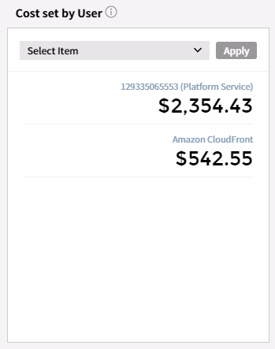
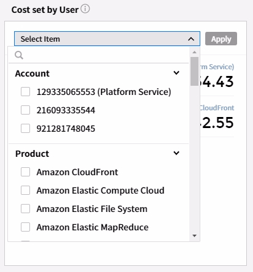
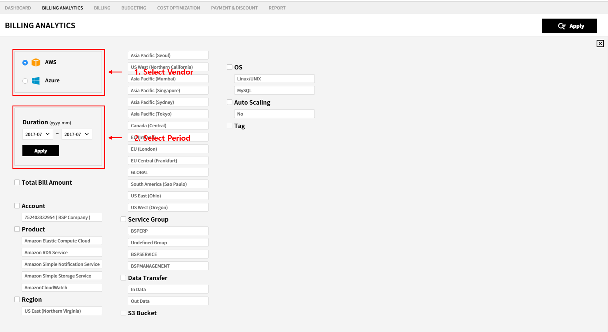
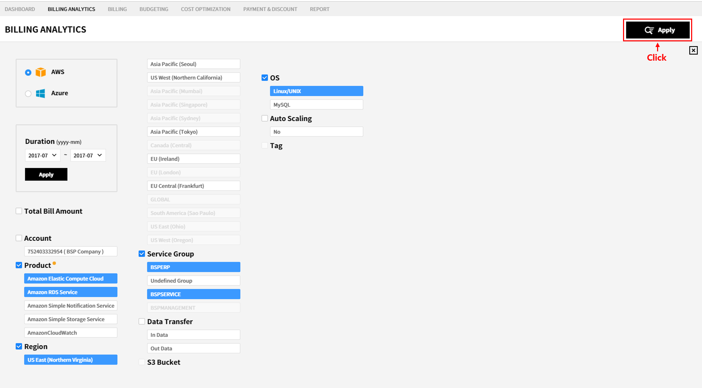
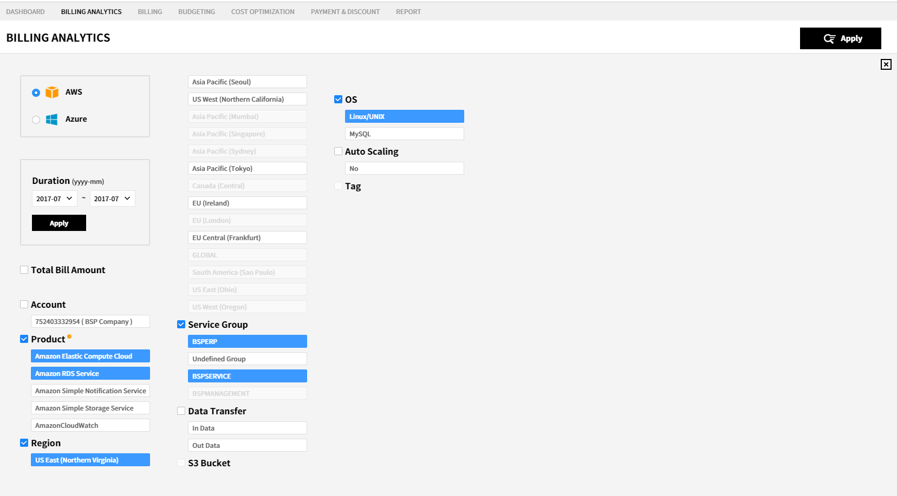
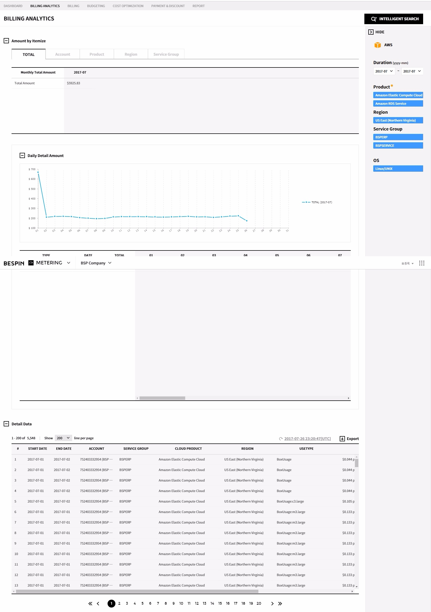

Metering
You can check cost incurred in operating Multi Cloud Service.
The Metering service provides 7 menus.
Dashbaord
You can check status of cost currently incurred and monthly/daily cost per Cloud Service in a single pane.
Metering > Dashboard1. Cloud Vendor
Cloud Vendors currently in use and account information of each Vendor is shown.
As you select a Cloud Vendor and account, cost of selected Vendor and account is shown on the Dashboard.
2. Monthly Summary
You can check summary of cost for this month.
-
Hot bill :
Shows cost which has been incurred in less than 24 hours so has not yet been fully settled. -
Complete Settlement :
Shows total cost which has been fully settled for the period, from the first day of this month to now. -
Estimated cost :
Shows estimated cost for this month by analyzing usage pattern.
3. Comparison of Accumulated Expenditure per Month
By setting search period, you can compare and analyze cost incurred for 12 months at a maximum.
You can select one of 2/4/6/12 months for search period, or you can directly enter a date for it.
Following are indicators of the graph.
-
Blue :
Indicates cost for the respective month, whose unit period is from the first day to the current date. -
Yellow :
Indicates Hot bill (cost which has been incurred in less than 24 hours so has not yet been fully settled). -
Grey :
Indicates total cost for the last month. -
Dash-line :
Indicates estimated cost for this month.
4. Customized Cost
You can check cost for the item, by selecting the item you want to check immediately.
If you click the [Cost Standard] button, available items are shown in the menu.
|

|

|
You can select items of categories listed below to check cost in detail.
- Account
- Product
- Region
- Data Transfer
- Service Group
5. Daily Cost Trend
Daily Cost Trend provides you the trend chart of daily cost for the selected period, as well as its detailed data.
With this, you can check daily usage pattern and the time when unexpected cost has been incurred.
6. Cost per Item
You can check cost per Account, Product, Region and Service Group. Also, you can check their daily trend chart.
7. Monthly Cost Trend
You can check trend of monthly cost for 3 years at a maximum.
You can also check trend of monthly cost from macro perspective.
Billing Analytics
Billing Analytics provides Intelligent Search feature, through which you can find cost more easily and quickly by setting the resource actually being used as a search condition.
Metering > Billing Analytics1. Cost Search
By selecting a search condition, you can check cost incurred only on the selected item.
-
Select a Vendor and set a period you want to search.
As you select a Vendor and search period, Account, Product, Region and Service Group used in the period will be shown as search conditions. -
Select a search condition.
As you select a condition, only the items related to the condition are indicated as selectable. -
Click the [Apply] button.

-
You can see the search result.

2. View Search Result
You can go to the Service Group Management pane in which you can create or edit a Service Group.
For more information, please refer to the user guide for Service Group.
1.1 Cost per Item
You can check total cost which has been incurred for a period and condition you selected.
Also, you can check cost per Account/Product/Region/Service Group respectively. You can also check daily details and the trend chart for each item.
As you select one of the Total/Account/Product/Region/Service Group tabs, you can check cost of each item.
1.2 Detailed Data
You can check details for all types of cost in accordance with the period and condition you selected.
Billing
You can check monthly bill per Vendor for this month.
Also, you can check and compare monthly bills.
1. Bill
You can check a bill per Vendor/month, and you can compare it to the bill for the last month.
-
Select Vendor :
You can select a Vendor you want to check a bill for. As you select a Vendor, a bill from the selected Vendor appears. -
Select Month :
You can select the month you want to check a bill for. As you select month, a bill for the selected month appears. -
Monthly Summary :
You can access briefing of requisition for the selected month. -
Last Month Summary:
You can access briefing of requisition for the previous month of the selected one.
By clicking the [->] button, you can check the trend chart with which you can compare varied monthly cost for this year.
-
Monthly Trend Chart :
You can check monthly cost with the trend chart. -
Monthly Data :
You can check monthly cost with the grid.
2. Cost per Cloud Account
You can check cost per registered account.
You can check the cost for every registered account or aggregate cost with its details.
-
Select Account :
You can select an account you want to check a cost for. Summary/details of the selected account are shown. -
Summary :
Summary of cost is shown, including total amount; supplementary services; and discount. -
Details :
You can check details of the incurred cost. -
Change Display Mode :
You can check details shown by aligning them according to conditions per Vendor as below.
AWS : Invoice Account Service Group Region Tag
Azure : Subscription Service Group Region Meta Category
3. Total Cost
You can check cost per Account/Invoice. You can also check history of its supplementary service.
-
Cost per Account :
You can check cost per registered Account. -
Cost per Invoice :
You can check cost per Invoice. -
History of Supplementary Service :
You can check history of and cost incurred by supplementary service.
Budgeting
You can enter a monthly budget per Vendor and check actual cost in comparison with your budget.
By setting the alarm, you can receive a notification via SMS or e-mail when cost exceeds a certain ratio or amount within the budget you set in advance.
1. Budget Overview
Metering > Budgeting > Budget OverviewYou can check actual cost in your monthly budget with the graph.
-
Select Year :
Shows status of budget expenditure for the selected year. -
Total Budget :
You can compare total budget per Vendor and actual cost of all Vendors with the graph. -
Categorize Cloud Vendor :
You can compare a budget and actual cost of each Vendor with the graph.
You can select a Vendor you want to check for status for expenditure.
2. Budget Setting
Metering > Budgeting > Budget SettingYou can enter a monthly budget of the respective Vendor.
-
Select Year :
You can select the year you want to set a budget.
You can set a budget for 3 years at a maximum. -
Budget Table :
You can enter a monthly budget of each Vendor.
As you double-click a cell, it becomes editable. You can enter the budget there.
When you finish making a budget, click the [Save] button on the top to save changes.
3. Alarm List
Metering > Budgeting > Alarm ListRegarding budget expenditure, you can set an alarm.
-
Add New Alarm :
You can set a new budget alarm.
By clicking the button, you can enter details for a new alarm. -
Alarm Name :
Indicates the name of a new alarm. -
Warning :
Indicates whether an alarm is On/Off. -
Alarm Mode :
You can select how you receive an alarm. -
[Delete] button :
By clicking the button, you can delete an alarm. -
[Edit] button :
You can edit an alarm.
4. Alarm Receiver
Metering > Budgeting > Alarm ReceiverYou can set a receiver of alarms.
-
[Add New Receiver] button :
You can add a new alarm receiver.
By clicking the button, you can enter details of a new receiver. -
Receiver Name :
Shows the name of an alarm receiver. -
Email :
Shows the e-mail address of an alarm receiver. -
Cellphone :
Shows cellphone number of an alarm receiver. -
Alarm Name :
You can select which alarm is to be sent to a receiver.
The Alarm List has a list of created alarms. From the list, you can select which alarm is to be sent to a receiver.
Cost Optimization
Based on Usage, Performance and Cost analysis, the Cost Optimization recommends you instances which require RI purchase or Right Sizing.
With the Intelligent Search, you can check which one of the searched instances requires RI purchase and which one requires Right Sizing.
Also, you can access data to analyze usage status of the purchased AWS RI.
1. Right-sizing
Metering > Cost Optimization > Right-sizingYou can check which one of the searched instances requires RI purchase and which one requires Right-sizing, by using Frequency and Utilization filters respectively.
-
Frequency :
Through the Frequency, you can check instances which are consistently being used.
The conditions can be changed, and you can go to the pane for RI simulation if you click the number. -
Utilization :
Through the Utilization, you can check instances whose usage ratio is above/below a certain percentage for a certain period of time.
The conditions can be changed, and you can go to the pane for Right Sizing if you click the number. -
All Instances/Filtered Instances of Search Result :
Through Intelligent Search, you can check Frequency/Utilization of the searched instances.
If you click the Search Result with Filtering tab, you can check only instances which correspond to Frequency and Utilization conditions you set.
1.1 RI Simulation
Shows a list of instances filtered by Frequency you set, and you can carry out RI purchase simulation for the selected instance (instance with identical Type, Region and OS).
-
Instance List :
Shows a list of instances which correspond to Frequency condition you set.
As you click the [RI Simulation] button, you can execute RI purchase simulation for instances of the selected Type, Region and OS. -
RI Simulation :
You can compare current cost to the trend for estimated cost of RI purchase by selecting conditions for RI purchase.
1.2 Right Sizing
Shows a list of instances filtered by Frequency you set, and you can carry out RI purchase simulation for the selected instance (instance with identical Type, Region and OS).
-
Instance List :
Shows a list of instances which correspond to Utilization filter you set.
As you select an instance on the list, you can check usage ratio and information about usage time/cost of the selected instance. -
Resource Usage Ratio :
Regarding the selected instance, you can check usage ratio of CPU, Memory and Disk for each period.
With this, you can check when the selected instance has been used considerably and whether it has proper Type and Size. -
Time/Cost :
You can check average daily usage time and average cost of the selected instance.
With this, you can check daily usage pattern of the selected instance.
2. AWS RI Analysis
Metering > Cost Optimization > AWS Ri AnalysisYou can check usage history of the purchased RIs.
-
RI List :
Shows a list of the purchased RIs.
By selecting an RI, you can check usage status of the selected RI. -
RI Usage Status :
Provides the graph with which you can compare the number of instance which actually has identical Type, Region and OS to the number of the selected RI.
With this graph, you can check whether the purchased RI is being used efficiently.
Payment & Discount
Provides Report Templates, and you can download the report you make.
Metering > Payment & Discount1. Payment & History
Metering > Payment & Discount > Payment & DiscountYou can check history of claimed charge and its payment.
2. Discount History
Metering > Payment & Discount > Discount HistoryYou can check history of discounts you have had.
3. Credit Information
Metering > Payment & Discount > Credit InformationYou can check issue status and usage status of credit.
Report
Provides Report Templates, and you can download a report you make.
Metering > Report
Provides four types of Report Templates as below.
Expenditure Status per Product/Region Usage & Expenditure Status per Product Expenditure Status per Product/Region in Azure Usage & Expenditure Status per Product in AzureOn theMy Reportmenu, you can check a list of the created Reports and re-download them.
If you click each Report Template, the menu shown below appears on the right side.
-
Report Info :
If you select the period and file format of a Report, you can download the Report accordingly.
You can download it in .xls or .pdf format. -
Log :
Shows download history of Reports created with the selected Report Template.
You can re-download the created Report.
On the My Reportmenu, you can check a list of the created Reports and re-download them.